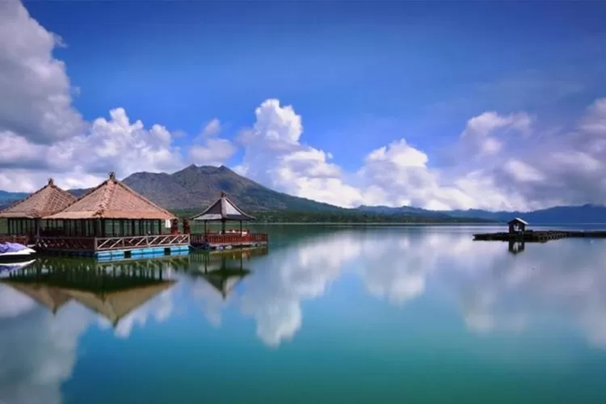

Destinasi Wisata Bangli

Desa Penglipuran
Desa tradisional Bali yang terpelihara dengan sempurna, terkenal dengan tata letak yang rapi dan arsitektur tradisionalnya.
Lihat Detail →

Danau Batur
Danau vulkanik terbesar di Bali yang terletak di kaldera Gunung Batur, dikelilingi pemandangan spektakuler.
Lihat Detail →
Air Terjun Tukad Cepung
Air terjun tersembunyi yang menakjubkan di dalam gua, dengan sinar matahari yang menembus membentuk efek cahaya magis.
Lihat Detail →
Kintamani
Kawasan dengan pemandangan Gunung Batur dan Danau Batur yang spektakuler, terkenal dengan perkebunan jeruk dan kopinya.
Lihat Detail →